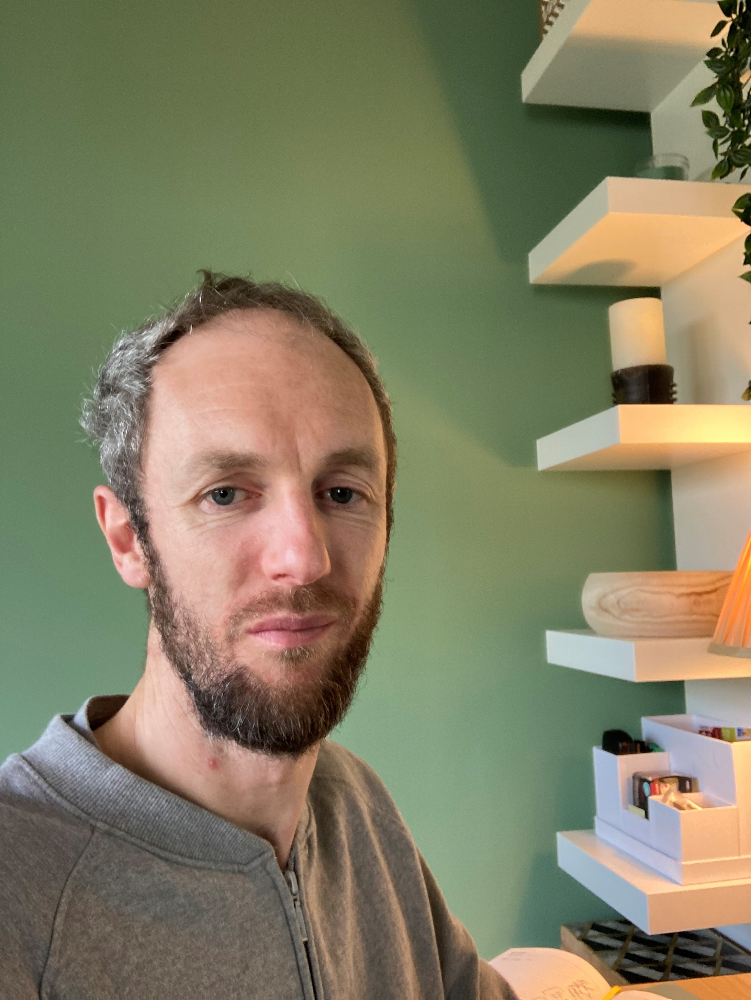

RESEARCH | POLICY CONTRIBUTIONS
Welcome to my website!
I am head of the Central Bank of Ireland's Research Collaboration Unit
Since September 2024, I am also an Adjunct Professor at University College Cork's College of Business and Law
Prior to joining the Unit, I spent more than ten years working on financial stability and macroprudential policy issues in the Bank's Macro-Financial and Financial Stability areas
Learn more about the research environment we are building at the Central Bank here
We are extremely honoured to be welcoming a prestigious group of Visiting Scholars over late 2024 and 2025. See more here
... while our Research Affiliates have already, and will continue to bring huge benefits to our research teams and output. Learn more here